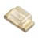

Things used in this project
Hardware components |
|

|
Blues Notecarrier A |
| Cardputer | |

|
Seeed Studio XIAO ESP32S3 Sense |

|
Seeed Studio XIAO SAMD21 (Pre-Soldered) - Seeeduino XIAO |

|
Seeed Studio Grove Shield for Seeeduino XIAO - with embedded battery management chip |
| Seeed Studio Grove - Light Sensor | |
| Seeed Studio Grove - Piezo Buzzer | |
| Grove - Flame Sensor | |
| Grove Red LED | |
| IR receiver (generic) | |
|  | LED, Low Power |
| L9110s Driver | |
| Rechargeable Battery, 3.7 V | |
Software apps and online services |
|

|
Arduino IDE |

|
Blues Notehub.io |
| ThingSpeak API | |
| Webhook.site | |
Hand tools and fabrication machines |
|
| Box, General Purpose | |
| Tape, Velcro® Stick On Tape/Strip | |
| Wrist cuff | |
Story
Introduction
In this project I have set myself two challenges to solve and using giveaway kits from contest sponsors:
- People with mobility disabilities sometimes need a remote control system to activate or deactivate multiple devices in the home but without the need to carry multiple remote controls. What can we do? I will design a single infrared remote control to activate all possible devices. The first version will control a TV and a portable lamp using the Cardputer device, the Seeeduino XIAO board and IR receiver sensor. Additionally, the disabled user can carry the remote control in their hand using a wrist cuff, to avoid holding it or hanging it while moving around the house.
- I also want to design a device that monitors the ambient light inside the home and can differentiate between lamplight and fire. If the light is caused by fire, then the system will notify the disabled person through an audible alarm or through an alert through an IoT system. What can we do to solve this challenge? I will use the Blues Notecarrier-A, and the XIAO ESP32S3 boards, and also the Grove Light and Flame sensors.
IR Remote Control
In this step I will use the M5STACK Cardputer device as an infrared remote control, since it has an infrared emitter to interact with all kinds of devices. Below I show some of the main features of this excellent product:
- M5StampS3 Microcontroller.
- 56 key keyboard.
- 1.14 Inch TFT Screen.
- Cavity speaker and SPM1423 digital MEMS microphone.
- Infrared emission tube is used for infrared control interaction.
- HY2.0-4P port for connecting and expanding I2C sensors.
- Micro SD card slot for expanding storage space.
- The built-in 120mAh and 1400mAh lithium battery in the base provide long battery life.
- Base with magnet, compatible with Lego hole expansion.
Remember that the navigation and selection keys of the Cardputer are those shown in the image below: Up key (semicolon), Down key (dot), Left key (comma), and Right key (forward slash).
For more details on how to program, applications, schematic diagram, Pin Map, and examples, please visit the official site here: https://docs.m5stack.com/en/core/Cardputer
Installing Board and Library
To program the Cardputer, it is necessary to use the latest version of Arduino IDE. In my case I installed Arduino IDE 2.3.2 and it worked fine.
To install the Arduino M5Stack board, please follow the steps in the following link, below I show you the version that I installed: https://docs.m5stack.com/en/arduino/arduino_board
Finally, to install the M5Core library and all its dependencies, follow the instructions in the following link. Below I show you the version that I used: https://docs.m5stack.com/en/arduino/arduino_library
Programming the TV Remote Control
- As I had previously mentioned, I will use the Cardputer device's IR sensor to transmit the IR codes.
- For reference, I have used the example code "Ultimate-Remote" from the MIT license and published by geo-tp in the github account: Ultimate-Remote
- This project is made to run on the PlatformIO IDE platform of Visual Studio. To run it on Arduino IDE you need to remove platformio.ini file and install IRRemote library which is compatible with many IR remote controls protocols.
-
First, I explored this project, and I found the DAEWOO brand between 625 in the
remote_data.cppfile. Afterwards, I found 20 different DAEWOO remote controls with their identifiers here:
const Remote Daewoo_DVD_PlayerRemotes[] PROGMEM = {
{"21,-1.csv", Daewoo_DVD_Player_21_1_csvCommands, sizeof(Daewoo_DVD_Player_21_1_csvCommands) / sizeof(RemoteCommand)},
};
const Product DaewooProducts[] PROGMEM = {
{"Unknown_VCR", Daewoo_Unknown_VCRRemotes, sizeof(Daewoo_Unknown_VCRRemotes) / sizeof(Remote)},
{"Unknown_97P1R2ZDA0", Daewoo_Unknown_97P1R2ZDA0Remotes, sizeof(Daewoo_Unknown_97P1R2ZDA0Remotes) / sizeof(Remote)},
{"Unknown_DV-800", Daewoo_Unknown_DV_800Remotes, sizeof(Daewoo_Unknown_DV_800Remotes) / sizeof(Remote)},
{"Unknown_97P1RA3AB0", Daewoo_Unknown_97P1RA3AB0Remotes, sizeof(Daewoo_Unknown_97P1RA3AB0Remotes) / sizeof(Remote)},
{"Unknown_R-40A06", Daewoo_Unknown_R_40A06Remotes, sizeof(Daewoo_Unknown_R_40A06Remotes) / sizeof(Remote)},
{"Unknown_DAEWOO", Daewoo_Unknown_DAEWOORemotes, sizeof(Daewoo_Unknown_DAEWOORemotes) / sizeof(Remote)},
{"Unknown_Visa", Daewoo_Unknown_VisaRemotes, sizeof(Daewoo_Unknown_VisaRemotes) / sizeof(Remote)},
{"Unknown_r-22", Daewoo_Unknown_r_22Remotes, sizeof(Daewoo_Unknown_r_22Remotes) / sizeof(Remote)},
{"Unknown_DS608P", Daewoo_Unknown_DS608PRemotes, sizeof(Daewoo_Unknown_DS608PRemotes) / sizeof(Remote)},
{"Unknown_97P04701", Daewoo_Unknown_97P04701Remotes, sizeof(Daewoo_Unknown_97P04701Remotes) / sizeof(Remote)},
{"Unknown_14Q3", Daewoo_Unknown_14Q3Remotes, sizeof(Daewoo_Unknown_14Q3Remotes) / sizeof(Remote)},
{"Unknown_DV-F24D", Daewoo_Unknown_DV_F24DRemotes, sizeof(Daewoo_Unknown_DV_F24DRemotes) / sizeof(Remote)},
{"TV", Daewoo_TVRemotes, sizeof(Daewoo_TVRemotes) / sizeof(Remote)},
{"Unknown_DVDS150", Daewoo_Unknown_DVDS150Remotes, sizeof(Daewoo_Unknown_DVDS150Remotes) / sizeof(Remote)},
{"Unknown_R-40A15", Daewoo_Unknown_R_40A15Remotes, sizeof(Daewoo_Unknown_R_40A15Remotes) / sizeof(Remote)},
{"Unknown_R-43A08", Daewoo_Unknown_R_43A08Remotes, sizeof(Daewoo_Unknown_R_43A08Remotes) / sizeof(Remote)},
{"VCR", Daewoo_VCRRemotes, sizeof(Daewoo_VCRRemotes) / sizeof(Remote)},
{"Unknown_R-40A10", Daewoo_Unknown_R_40A10Remotes, sizeof(Daewoo_Unknown_R_40A10Remotes) / sizeof(Remote)},
{"DVD Player", Daewoo_DVD_PlayerRemotes, sizeof(Daewoo_DVD_PlayerRemotes) / sizeof(Remote)},
};-
After installing the Ultimate Remote App, I run and tested these remote controls and found three of them compatible with my DAEWOO TV: R-40A06, R-40A10, and R-40A15. So I type them in the main menu in the favorites category in the following code of the
remote_data.cppfile.
#include <pgmspace.h>
#include "remote_data.h"
#include "remote_commands.h"
// Liste des telecommandes prefs
const std::vector<FavoriteRemote> defaultFavoriteRemotes = {
FavoriteRemote{"Sony", "TV", "1,-1.csv", " LAMP #1"},
FavoriteRemote{"Sony", "Unknown_RM-D7M", "15,-1.csv", " LAMP #2"},
FavoriteRemote{"Sony", "Unknown_RM-D820", "17,-1.csv", " LAMP #3"},
FavoriteRemote{"Daewoo", "Unknown_R-40A06", "20,-1.csv", " DAEWOO #1"},
FavoriteRemote{"Daewoo", "Unknown_R-40A10", "20,-1.csv", " DAEWOO #2"},
FavoriteRemote{"Daewoo", "Unknown_R-40A15", "20,-1.csv", " DAEWOO #3"},
};- If you want to reduce the size of the program to upload other applications such as games, watches, etc; you can do it here. For example, I removed 120 brands of remote controls from the 625, and gained 500k free memory.
-
But if you want to change the main menu, you can do it in the
selection.cppfile, for example:
const std::string getSelectionModeToString(SelectionMode mode) {
switch (mode) {
case SelectionMode::SCAN:
return "SCANNER";
case SelectionMode::FAVORITES:
return "FAVORITES";
case SelectionMode::POPULARS:
return "POPULARS";
case SelectionMode::ALL_REMOTES:
return "REMOTES";
default:
return "UNKNOWN";
}
}
const std::string getSelectionModeDescription(SelectionMode mode) {
switch (mode) {
case SelectionMode::SCAN:
return " SEARCH";
case SelectionMode::FAVORITES:
return " LAMP AND TV";
case SelectionMode::POPULARS:
return " BRANDS";
case SelectionMode::ALL_REMOTES:
return " AVAILABLE";
default:
return "UNKNOWN";
}
}- You can try this with your smart TV! Remember that in the downloads section, you can find the link to this project in my Gitub account. Below I show you the navigation menu on the Cardputer.
- It's simple, first I select favorites,
- Then I have 3 remote control for the DAEWOO TV. In my case I felt comfortable using Remote DAEWOO #3.

- The commands that I will use are the following: POWER, AV, CH_UP, CH_DOWN, VOL_UP, and VOL_DOWN.

Programming the Lamp Remote Control
- I have designed a portable lamp that can be useful for a person with a disability since it is small, does not weigh, the battery is rechargeable and has several modes of operation. Below I show you the steps to follow to achieve this.
- The schematic diagram is shown below. As you can see, we need a Seeduino XIAO board, a driver, a generic infrared receiver, a high-power LED (1-3 watts), a broken bulb, and a 15 ohm resistor.

- The IR receiver can be powered from 3.3 to 5 VDC. I used a generic IR receiver like the ones shown in the image below and which have good range and good response to the IR remote control.
- The infrared sensor is actually an IC that includes a photosensitive diode to the infrared signal of the emitter and a series of circuits to adapt the received signal and provide a digital signal at the output to later be processed. This circuit is capable of separating the signal. infrared generated by remote control of the rest of the radiation in the environment. The pinout is shown in the image below.
- The carrier signal frequency is 38 kHz. The transmitter emits 38kHz bursts of 1.2 ms, followed by a 0.6 ms blank to transmit a logic 1. The transmitter emits 38kHz bursts of 0.6 ms, followed by a 0.6 ms blank to transmit a logic 0.
- Each button on the remote control emits a code, so there is a need to create a communication protocol. There are different protocols depending on the manufacturer. The image below shows the 12-bit SIRC protocol, where: a) The beginning is to warn that we will send a code; b) The command has 7 bits (remote control key); and c) The address has 5 bits to activate different devices.
-
First we need to find which remote control is compatible with the IRremote library. In my case I tried some remote controls from the Ultimate-Remote application, and chose the remote control from the SONY manufacture which was easily recognized. In the code below I show you the application
seeeduino_xiao_ircodes.inowhich help us to recognize the codes that are compatible with this library. As you can see, we only use the IR receiver and show on the serial port the codes.
#include <IRremote.h>
int RECV_PIN = 10; // define input pin on Arduino
IRrecv irrecv(RECV_PIN);
decode_results results; // decode_results class is defined in IRremote.h
void setup() {
Serial.begin(9600);
irrecv.enableIRIn(); // Start the receiver
}
void loop() {
if (irrecv.decode(&results)) {
Serial.println(results.value, HEX);
irrecv.resume(); // Receive the next value
}
delay (200); // small delay to prevent reading errors
}- The selected codes were organized to turn the lamp on and off as follows:
-
I did the same procedure as in the previous section to configure 3 SONY brand remote controls: TV, RM-D7M, and RM-D820. Below you see those loaded in the
remote_data.cppfile:
#include <pgmspace.h>
#include "remote_data.h"
#include "remote_commands.h"
// Liste des telecommandes prefs
const std::vector<FavoriteRemote> defaultFavoriteRemotes = {
FavoriteRemote{"Sony", "TV", "1,-1.csv", " LAMP #1"},
FavoriteRemote{"Sony", "Unknown_RM-D7M", "15,-1.csv", " LAMP #2"},
FavoriteRemote{"Sony", "Unknown_RM-D820", "17,-1.csv", " LAMP #3"},-
Finally, below I show you the code for the
seeduino_xiao_recv.inoprogram, which will help us turn the lamp on and off, and also to fade it three times.
#include <IRremote.h>
#define Button_1 0x10 // key_1 hex value
#define Button_2 0x810 //key_2 hex value
#define Button_3 0x410 // key_3 hex value
int SENSOR = 10; // IR receiver sensor to pin 10
IRrecv irrecv(SENSOR);
decode_results codigo; // decode_results class
int LEDLAMP_PIN1 = 1;
int LEDLAMP_PIN2 = 2;
int SENSOR_GND = 9;
void setup() {
Serial.begin(9600);
irrecv.enableIRIn(); // initialize data reception
pinMode(LEDLAMP_PIN1, OUTPUT); // pin 1 as output
pinMode(LEDLAMP_PIN2, OUTPUT); // pin 2 as output
pinMode(SENSOR_GND, OUTPUT); // pin 3 used as gnd
}
void loop() {
digitalWrite(SENSOR_GND, LOW);
digitalWrite(LEDLAMP_PIN2, LOW);
if (irrecv.decode(&codigo)) { // if there is already decoded data
Serial.println(codigo.value, HEX); // print the value on monitor - hex
if (codigo.value == Button_1){
analogWrite(LEDLAMP_PIN1, 255);
} // if code is button 1
if (codigo.value == Button_2){
analogWrite(LEDLAMP_PIN1, 0);
} // if code is button 2
if (codigo.value == Button_3){
for(int i=0; i<=2; i++){
for(int i=0; i<=255; i++) {
analogWrite(LEDLAMP_PIN1, i);
delay(10);
}
for(int i=255; i>=0; i--) {
analogWrite(LEDLAMP_PIN1, i);
delay(10);
}
}
} // if code is button 3
irrecv.resume(); // summarizes data acquisition
}
delay (100);
}- Again I have 3 remote control options for the lamp. In my case I used Remote LAMP #1 with their IR codes already tested.
- Respectively, I used KEY1 to turn on the lamp, KEY2 to turn it off, and KEY3 to fade it.
Assembling IR Remote Control Devices
According to my objectives, I want to design accessible and comfortable devices for people with disabilities. Below I show you how to assemble the portable lamp and how to add a wrist cuff to the Cardputer.
Portable Lamp
I have used a 100(L)x70(W)x40(H) mm box to introduce the lamp receiving device. After soldering the high power LED and adding a heatsink, I used silicone to fix it inside a broken light bulb as shown below:

My low energy bulb is shown in the following image:
Then I fixed the pieces inside the box according to the schematic diagram, and as shown below.
The lower space is to insert the two 3.7 volt batteries.
After assembling the device you can see it below.
Adding wrist cuff to the Cardputer
I have recycled an old baumanometer wrist cuff like the one shown below.
I have also used velcro, and cut it to the following approximate dimensions 70(L)x60(W) mm.
I used nylon thread to attach the velcro to the Cardputer and the wrist cuff. Below I show you the wrist cuff on the arm.
And below you can see the Cardputer after attaching it to the Cardputer. The user can easily remove the device whenever they want.
IR Remote Control Test
Below you can see the demonstration of the functionality of the prototype when testing to control a DAEWOO TV and the portable lamp.
Light Monitor With Fire Alarm
The last part of this project is to build a system to monitor the ambient light from our portable lamp, as well as a fire alarm since it would be a good idea to warn the disabled user if the light is created by the light from our lamp or from an accidental fire. Below I show you the schematic diagram of this portable system.

How does it works?
- The portable lamp must be close to the light sensor.
- If the light of the portable lamp is OFF, then the resistance of the light sensor is greater than 10 and the red LED is ON.
- If the light of the portable lamp is ON, then the resistance of the light sensor is less than 10 and the red LED is OFF.
- The possible fire source must be close to the flame sensor.
- If there is a fire, then the flame sensor turns ON, the buzzer is on and the output is 1.
- If there is no fire, then the flame sensor is OFF, the buzzer is off and the output is 0.
- Through the Blues Notecarrier-A and the Global Cellular Notecard we can send this data to the blues notehub, Webhook site and ThingSpeak platforms.
After mounting the electronics in an M5Stack case, this is what it looks like:

Collecting Sensor Data With Notehub
- First we must open an account on the Notehub platform here: https://blues.com/notehub/
- To program my XIAO ESP32S3 board, I followed the steps shown in this tutorial which is for the Arduino NANO 33 BLE Sense board and I didn´t find any problems: Collecting Sensor Data
- On the blues notehub platform I have created the notecarrier-xiao-esp32s3 project.
-
The
notecarrier_xiao_esp32s3.inocode I uploaded to the XIAO ESP32S3 board is shown below:
#include <Notecard.h>
#include <HardwareSerial.h>
#include <math.h>
#define RED_LED D5 //Connect the LED Grove module to Pin 5
#define FLAME_SENSOR D2 //connect FLAME SENSOR to digital pin 2
#define BUZZER D0 //connect Grove - BUZZER to pin 0
#define NOTE_PRODUCT_UID "com.your-company.your-name:your_product"
#define usbSerial Serial
HardwareSerial txRxPinsSerial(0);
int flameValue;
const int thresholdvalue=10; //The threshold for which the LED should turn on.
float Rsensor; //Resistance of sensor in K
int getSensorInterval();
Notecard notecard;
void setup() {
pinMode(FLAME_SENSOR, INPUT);
pinMode(RED_LED,OUTPUT);
pinMode(BUZZER,OUTPUT);
digitalWrite(RED_LED,LOW);
digitalWrite(BUZZER,LOW);
// And configure txRxPinsSerial on pins RX=D6, TX=D7
txRxPinsSerial.begin(9600, SERIAL_8N1, 8, 9);
txRxPinsSerial.print("MySerial1");
usbSerial.begin(115200);
while (!usbSerial) {
; // wait for serial port to connect. Needed for native USB
}
usbSerial.println("Starting...");
notecard.begin(txRxPinsSerial, 9600);
notecard.setDebugOutputStream(usbSerial);
J *req = notecard.newRequest("hub.set");
if (req != NULL) {
JAddStringToObject(req, "product", NOTE_PRODUCT_UID);
JAddStringToObject(req, "mode", "continuous");
JAddBoolToObject(req, "sync", true);
notecard.sendRequest(req);
}
}
void loop() {
int sensorValue = analogRead(A9);
Rsensor=(float)(4095-sensorValue)*10/sensorValue;
if(Rsensor>thresholdvalue)
{
digitalWrite(RED_LED, HIGH);
}
else
{
digitalWrite(RED_LED, LOW);
}
if(isFlameDetected())
turnOnBUZZER();
else turnOffBUZZER();
usbSerial.print("Flame = ");
usbSerial.println(flameValue);
usbSerial.print("Resistance = ");
usbSerial.println(Rsensor);
J *req = notecard.newRequest("note.add");
if (req != NULL) {
JAddStringToObject(req, "file", "sensors.qo");
JAddBoolToObject(req, "sync", true);
J *body = JAddObjectToObject(req, "body");
if (body) {
JAddNumberToObject(body, "flame", flameValue);
JAddNumberToObject(body, "resistance", Rsensor);
}
notecard.sendRequest(req);
}
//delay(15000);
int sensorIntervalSeconds = getSensorInterval();
usbSerial.print("Delaying ");
usbSerial.print(sensorIntervalSeconds);
usbSerial.println(" seconds");
delay(sensorIntervalSeconds * 1000);
}
void turnOnBUZZER()
{
flameValue=1;
analogWrite(BUZZER,150);
}
void turnOffBUZZER()
{
flameValue=0;
analogWrite(BUZZER,0);
}
boolean isFlameDetected()
{
if(digitalRead(FLAME_SENSOR))
return false;
else return true;
}
// This function assumes you’ll set the reading_interval environment variable to
// a positive integer. If the variable is not set, set to 0, or set to an invalid
// type, this function returns a default value of 60.
int getSensorInterval() {
int sensorIntervalSeconds = 60;
J *req = notecard.newRequest("env.get");
if (req != NULL) {
JAddStringToObject(req, "name", "reading_interval");
J* rsp = notecard.requestAndResponse(req);
int readingIntervalEnvVar = atoi(JGetString(rsp, "text"));
if (readingIntervalEnvVar > 0) {
sensorIntervalSeconds = readingIntervalEnvVar;
}
notecard.deleteResponse(rsp);
}
return sensorIntervalSeconds;
}Don't forget to type the NOTE_PRODUCT_UID of your project.
Routing Data to Cloud: ThingSpeak
Here I have followed all the instructions in the following tutorial to transfer data from my system to the ThingSpeak platform: https://dev.blues.io/guides-and-tutorials/routing-data-to-cloud/thingspeak/
Below I show you the Neptune channel that I have created with the data from the light and flame sensors.
According to the instructions in the tutorial, do not forget to copy the Write API KEY

And then paste it into the ThingSpeak path that we created previously.

Light Monitor With Fire Alarm Test
Below I show you the video with the tests done with the light monitor with fire alarm system. In this demonstration I also make use of the portable lamp and the IR remote control created in the first part of this project.
Below I show you the images of the tests:
References:
- https://docs.m5stack.com/en/arduino/arduino_board
- https://docs.m5stack.com/en/arduino/arduino_library
- https://github.com/geo-tp/Ultimate-Remote
- Collecting Sensor Data
- https://dev.blues.io/guides-and-tutorials/routing-data-to-cloud/thingspeak/
- https://wiki.seeedstudio.com/xiao_esp32s3_getting_started/
- https://wiki.seeedstudio.com/Seeeduino-XIAO/
- https://wiki.seeedstudio.com/Grove-Light_Sensor/
- https://wiki.seeedstudio.com/Grove-Flame_Sensor/